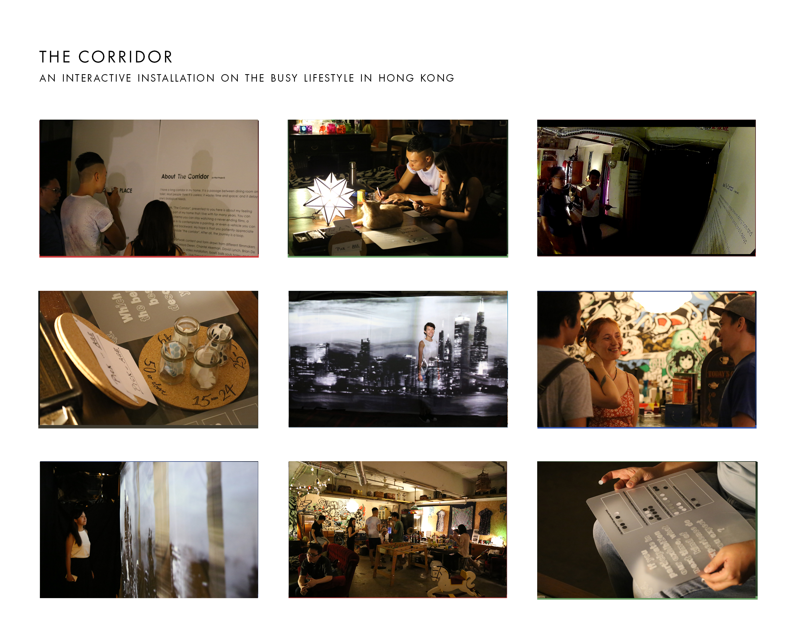

exploring the use of different forms and platforms for information delivery, throughout these years
retrieves data from new york times database
flash web design
html web design
my playground
delivering information through visual and interactive way